首页 > Python > Python编程环境搭建
Python VS Code下载和安装教程
Visual Studio Code，简称 VS Code，是由微软公司开发的 IDE 工具。与微软其他 IDE（如 Visual Studio）不同的是，Visual Studio Code 是跨平台的，可以安装在 Windows、Linux 和 macOS平台上运行。
不仅如此，Visual Studio Code 没有限定只能开发特定语言程序，事实上只要安装了合适的扩展插件，它可以开发任何编程语言程序，包括 Python。因此，本节就来讲解如何下载并安装 VS Code，使其能够支持 Python 编程。
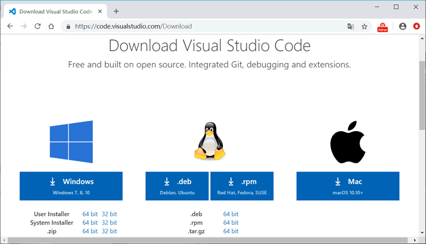
图 1 VS Code下载界面
可以看到，考虑到不同的操作系统平台，官方准备了分别适用于 Windows、Linux 和 macOS 操作系统的安装包，读者可根据实际情况，选择适合自己电脑的安装包。
值得一提得是，针对 Windows 系统提供的安装包中，还被细分为 User Installer、System Installer 以及 .zip 版，它们之间的区别是：
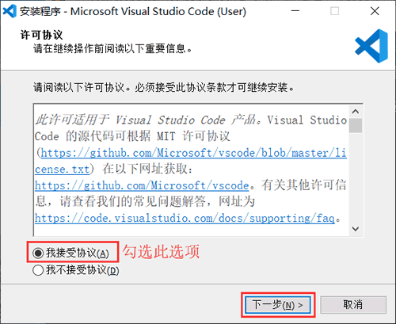
图 2 VS Code安装界面
勾选“我接受协议”，然后点击“下一步”，进入图 3 所示的界面。
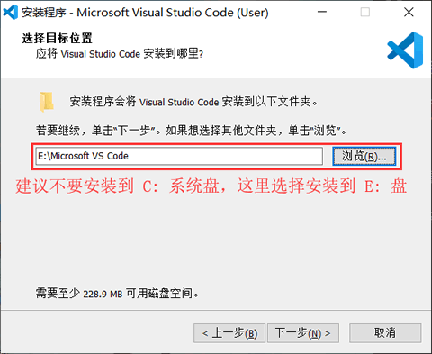
图 3 选择安装位置
如图 3 所示，建议读者不要将 VS Code 安装到系统盘（通常系统盘是 C 盘），可以安装到其它磁盘中。选择好安装位置后，继续点击“下一步”，进入图 4 所示的界面。
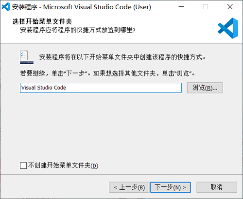
图 4 选择开始菜单文件夹
这里不需要改动，默认即可，直接点击“下一步”，进入图 5 所示的界面。
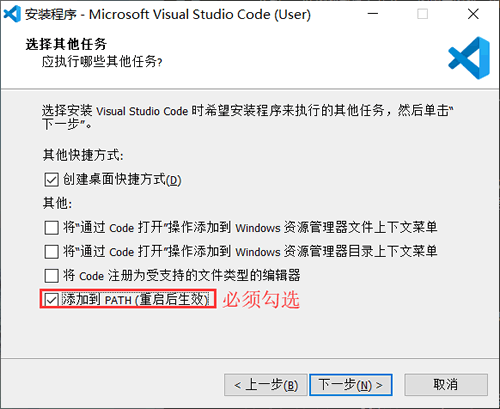
图 5 选择其他任务
读者可根据自己的操作习惯，勾选适合自己的选项即可，需要注意的是，"添加到 PATH"选项一定要勾选。选择完成后，点击“下一步”，进入图 6 所示的界面。
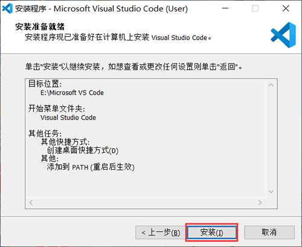
图 6 安装准备就绪
如图 6 所示，显示的是前面选择对 VS Code 做的配置，确认无误后点击“安装”，即可正式安装 VS Code。安装成功后，会出现如图 7 所示的界面，表示安装成功。
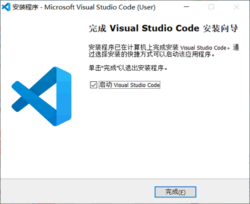
图 7 安装成功界面
点击“完成”，即可启动 VS Code。
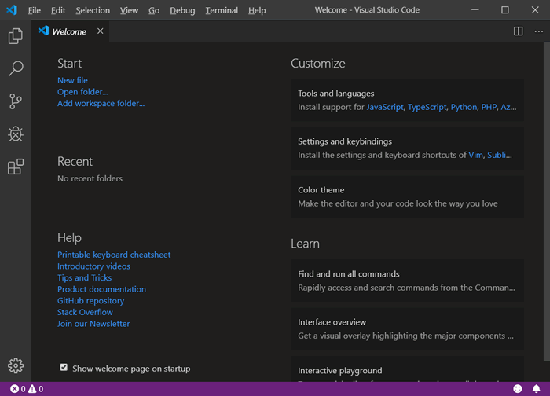
图 8 VS Code 界面
VS Code 安装 Python 扩展的方法有 2 种，分别是：
不仅如此，Visual Studio Code 没有限定只能开发特定语言程序，事实上只要安装了合适的扩展插件，它可以开发任何编程语言程序，包括 Python。因此，本节就来讲解如何下载并安装 VS Code，使其能够支持 Python 编程。
VS Code下载和安装
VS Code官网提供了 VS Code下载地址 ，如图 1 所示。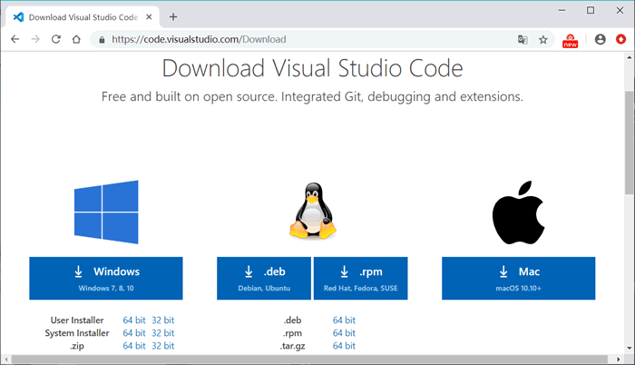
图 1 VS Code下载界面
可以看到，考虑到不同的操作系统平台，官方准备了分别适用于 Windows、Linux 和 macOS 操作系统的安装包，读者可根据实际情况，选择适合自己电脑的安装包。
值得一提得是，针对 Windows 系统提供的安装包中，还被细分为 User Installer、System Installer 以及 .zip 版，它们之间的区别是：
- User Installer：表示 VS Code 会安装到计算机当前账户目录中，意味着使用其他账号登陆计算机的用户将无法使用 VS Code；
- System Installer：和 User Installer 正好相反，即一人安装，所有账户都可以使用。
- .zip：这是一个 VS Code 的压缩包，下载后只需解压，不需要安装。也就是说，解压此压缩包之后，直接双击包含的 "code.exe" 文件，即可运行 VS Code。
由于笔者电脑使用的 Windows 10 系统，所以有 2 种安装 VS Code 的方式，但由于 .zip 版下载即可使用，无需安装，因此本节选择以 User installer 版本为例，给大家演示如何通过安装包安装 VS Code。默认情况下，VS Code 提供的是 User Installer 64 位的版本。
下载完成安装包之后，大家会得到一个类似名为 VSCodeUserSetup-x64-1.38.1.exe （笔者下载的是此版本）的文件，双击打开，看到如图 2 所示的安装界面。注意，.zip 压缩包中包含的 VS Code 和使用安装包安装，没有任何区别。
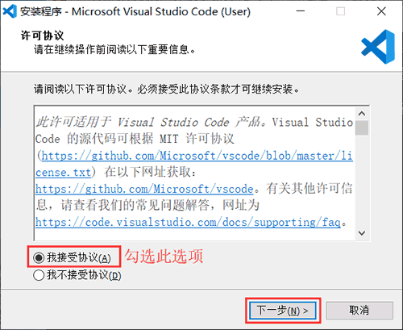
图 2 VS Code安装界面
勾选“我接受协议”，然后点击“下一步”，进入图 3 所示的界面。
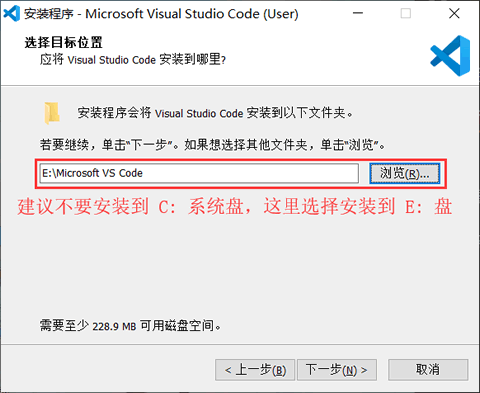
图 3 选择安装位置
如图 3 所示，建议读者不要将 VS Code 安装到系统盘（通常系统盘是 C 盘），可以安装到其它磁盘中。选择好安装位置后，继续点击“下一步”，进入图 4 所示的界面。
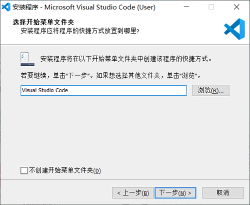
图 4 选择开始菜单文件夹
这里不需要改动，默认即可，直接点击“下一步”，进入图 5 所示的界面。
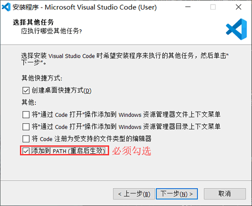
图 5 选择其他任务
读者可根据自己的操作习惯，勾选适合自己的选项即可，需要注意的是，"添加到 PATH"选项一定要勾选。选择完成后，点击“下一步”，进入图 6 所示的界面。
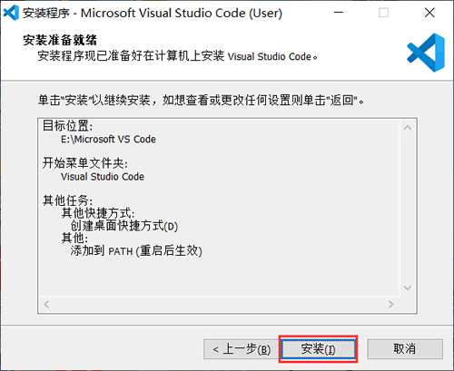
图 6 安装准备就绪
如图 6 所示，显示的是前面选择对 VS Code 做的配置，确认无误后点击“安装”，即可正式安装 VS Code。安装成功后，会出现如图 7 所示的界面，表示安装成功。
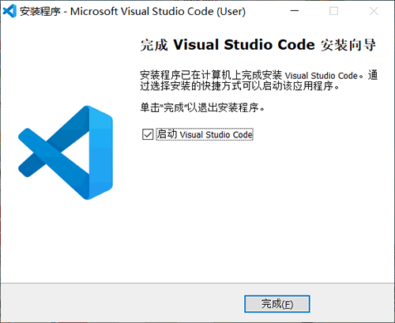
图 7 安装成功界面
点击“完成”，即可启动 VS Code。
VS Code安装Python扩展插件
注意，刚刚安装成功的 VS Code 是没有 Python 扩展的，安装此插件的方法也很简单。打开 VS Code，会进入图 8 所示的欢迎界面。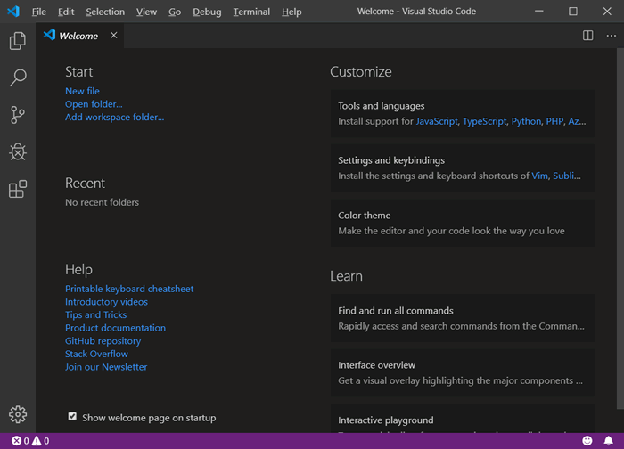
图 8 VS Code 界面
VS Code 安装 Python 扩展的方法有 2 种，分别是：
-
按照图 9 所示，在欢迎界面中选择 "Python"，下方会弹出一个对话框，选择 "OK"，即可完成 Python 扩展的安装；
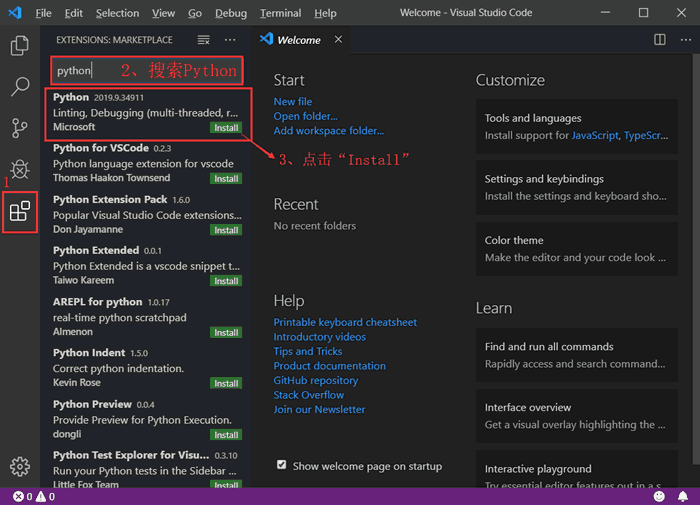
图 9 安装 Python 扩展插件
-
安装图 10 所示，点击“扩展”按钮，并搜索 Python 扩展插件，找到合适的扩展（这里选择的是第一个，这是 Python 的调试工具），选择“Install”即可安装成功。
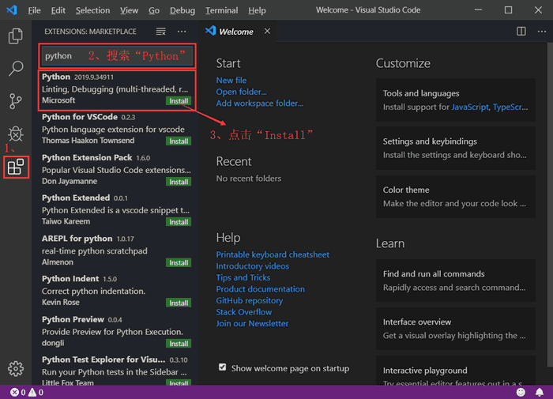
图 10 安装 Python 扩展插件
有关如何使用 VS Code 运行 Python 程序，可猛击《VS Code运行Python程序》一文详细了解。
关注公众号「站长严长生」，在手机上阅读所有教程，随时随地都能学习。内含一款搜索神器，免费下载全网书籍和视频。

微信扫码关注公众号